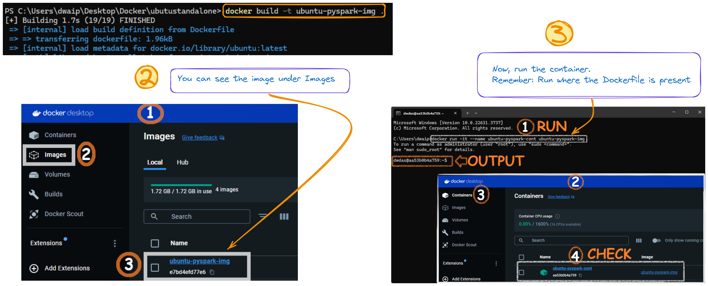

Table of contents
{: .text-delta } 1. TOC {:toc}Ubuntu, Python, OpenJDK & PySpark¶
In this article I will show you how to create Docker containers with Pyspark and Spark components.
For Busy People¶
- Save the Dockerfile content as
Dockerfile(no extension). cdto the folder containtng the Dockerfile- Run Commands:
That’s it!
Steps to Create the Image and Container¶
In this article I will show you how to create a single container with Ubuntu OS, Python and PySpark. We will use just a dockerfile to create it.
Follow the steps below to create the container.
Create the Dockerfile¶
In a folder create a file Dockerfile(No extension) with the content below.
Dockerfile
# Use Ubuntu 20.04 as the base image to avoid "externally-managed-environment" restrictions
FROM ubuntu:20.04
# Set environment variable to avoid interactive prompts during package installation
ENV DEBIAN_FRONTEND=noninteractive
# Update the package list to ensure we have the latest information about available packages
RUN apt-get update
# Install necessary packages including curl, sudo, and nano
RUN apt-get install -y curl sudo nano software-properties-common
# Add the 'deadsnakes' PPA (Personal Package Archive) to access newer Python versions
RUN add-apt-repository ppa:deadsnakes/ppa
# Add the OpenJDK PPA to get the latest JDK versions
RUN add-apt-repository ppa:openjdk-r/ppa
# Update the package list again to include the new PPAs
RUN apt-get update
# Install Python 3.12, pip, and OpenJDK 17
RUN apt-get install -y python3.12 python3-pip openjdk-17-jdk-headless
# Install the PySpark library using pip
RUN pip3 install pyspark
# Clean up the package lists to reduce the image size
RUN apt-get clean && rm -rf /var/lib/apt/lists/*
# Create a root user and set its password
RUN echo 'root:Passw0rd' | chpasswd
# Create a new user 'dwdas', set a password, and add this user to the sudo group
RUN useradd -ms /bin/bash dwdas && echo 'dwdas:Passw0rd' | chpasswd && adduser dwdas sudo
# Allow the 'dwdas' user to run sudo commands without a password
RUN echo 'dwdas ALL=(ALL) NOPASSWD:ALL' >> /etc/sudoers
# Set the working directory to the home directory of the new user
WORKDIR /home/dwdas
# Switch to the new user 'dwdas'
USER dwdas
# Expose port 8888, commonly used for Jupyter Notebook, if needed
EXPOSE 8888
# Set the default command to start a bash shell
CMD ["bash"]
Build the Image¶
Open CMD, navigate to the folder with the Dockerfile, and run:
After successfully running the command, you will see an image in your Docker Desktop app:
Run the Docker Container¶
In command prompt, run:
This will create a container with the image we created earlier and start it. You can see it from the Container section of your Docker window.

Details of the container¶
Here are the details of the installed components. The table will be a handy reference to know which components are installed and important locations, variables etc.
| Component | Details |
|---|---|
| Base Image | ubuntu:20.04 |
| Python Version | Python 3.12, installed via the deadsnakes PPA |
| Java Version | OpenJDK 17 (Headless), installed via the openjdk-r PPA |
| PySpark Version | Latest version of PySpark installed via pip |
| Home Directory for User | /home/dwdas |
| Spark Home | /opt/bitnami/spark |
| Java Home | /opt/bitnami/java |
| Python Path | /opt/bitnami/spark/python/ (for PySpark integration) |
| Spark Configuration Directory | /opt/bitnami/spark/conf |
| Spark Worker Directory | /opt/bitnami/spark/work |
| Environment Variables | DEBIAN_FRONTEND=noninteractive to avoid interactive prompts during installation |
| User Created | dwdas with sudo privileges and passwordless sudo access |
| Exposed Port | Port 8888, commonly used for Jupyter Notebooks |
| Default Command | bash shell set as the default command |
| Network Configuration | Connected to the dasnet network |
| Spark Ports | Spark Master: 7077 (mapped to host port 17077), Spark Master UI: 8080 (mapped to host port 16080), Spark Worker UI: 8081 (mapped to host port 16002), 8082 (mapped to host port 16004) |
Error: Package Not Found (404 Not Found)¶
When building the Docker image, I got a 404 Not Found error because some packages like python3.12 and openjdk-17-jdk-headless couldn't be found. This usually happens if the package lists are outdated or there's an issue with the repositories. Here's how to fix it:
-
Update Package Lists: Run
apt-get updatefirst to make sure your package lists are current. -
Add Correct PPAs: Update the Dockerfile to include these PPAs:
deadsnakesfor Python.-
openjdk-rfor OpenJDK. -
Use
--fix-missingOption: If the problem continues, tryapt-get install --fix-missingto fix missing packages. -
Install Specific Versions: If the latest version isn't available, try installing a slightly older but stable version.
Debian, Downloaded Python, Pyspark - no venv.¶
This Section shows you how to create a Docker container with the latest Debian, Python 3.11, OpenJDK 17, and PySpark. We’ll set up a root user and a named user with essential environment variables.
Note: If you install python using apt-get install in new Debain it will ask you to install in venv mode. We want to avoid this. Hence we download it(weget) then intstall it manually.
We’ll use a Dockerfile and docker-compose.yml for the setup.
Steps to Create the Image and Container¶
Create a Dockerfile:¶
Create a Dockerfile.txt with the contents below and remove the .txt extension
Dockerfile
# Use Debian as the base image
FROM debian:latest
# Set environment variable to avoid interactive prompts during package installation
ENV DEBIAN_FRONTEND=noninteractive
# Update the package lists and install essential packages
RUN apt-get update && apt-get install -y --no-install-recommends \
curl \
wget \
tar \
bash \
ca-certificates \
sudo \
build-essential \
libssl-dev \
zlib1g-dev \
libbz2-dev \
libreadline-dev \
libsqlite3-dev \
libffi-dev
# Copy the Python source tarball into the image
COPY Python-3.11.9.tgz /tmp/
# Extract, build, and install Python 3.11.9
RUN cd /tmp && \
tar -xvf Python-3.11.9.tgz && \
cd Python-3.11.9 && \
./configure --enable-optimizations && \
make -j 8 && \
make altinstall && \
cd .. && \
rm -rf Python-3.11.9 Python-3.11.9.tgz
# Create symbolic links for python, python3, pip, and pip3
RUN ln -s /usr/local/bin/python3.11 /usr/bin/python && \
ln -s /usr/local/bin/python3.11 /usr/bin/python3 && \
ln -s /usr/local/bin/pip3.11 /usr/bin/pip && \
ln -s /usr/local/bin/pip3.11 /usr/bin/pip3
# Install OpenJDK 17
RUN apt-get install -y openjdk-17-jdk-headless
# Install the PySpark library using pip
RUN python3.11 -m pip install pyspark
# Set environment variables
ENV JAVA_HOME=/usr/lib/jvm/java-17-openjdk-amd64
ENV PYTHONPATH=/usr/local/lib/python3.11/dist-packages
ENV PYSPARK_PYTHON=/usr/local/bin/python3.11
ENV PATH=$PATH:$JAVA_HOME/bin
# Clean up the package lists to reduce the image size
RUN apt-get clean && rm -rf /var/lib/apt/lists/*
# Create a root user and set its password
RUN echo 'root:Passw0rd' | chpasswd
# Create a new user 'dwdas', set a password, and add this user to the sudo group
RUN useradd -ms /bin/bash dwdas && echo 'dwdas:Passw0rd' | chpasswd && adduser dwdas sudo
# Allow the 'dwdas' user to run sudo commands without a password
RUN echo 'dwdas ALL=(ALL) NOPASSWD:ALL' >> /etc/sudoers
# Set the working directory to the home directory of the new user
WORKDIR /home/dwdas
# Switch to the new user 'dwdas'
USER dwdas
# Expose port 8888, commonly used for Jupyter Notebook, if needed
EXPOSE 8888
# Set the default command to start a bash shell
CMD ["bash"]
```
</details>
### <span style="font-family: 'Segoe UI', sans-serif; letter-spacing: 1px;color: #485BDA;">Download Python and place in the same folder</span>
Download Python 3.11.9 from [this site](https://www.python.org/ftp/python/3.11.9/Python-3.11.9.tgz) and place it in the same directory.
### <span style="font-family: 'Segoe UI', sans-serif; letter-spacing: 1px;color: #485BDA;">Build the Docker Image:</span>
- Open a terminal and navigate to the directory containing the Dockerfile.
- Run the following command to build the Docker image:
```bash
docker build -t my-debian-pyspark .
```
### <span style="font-family: 'Segoe UI', sans-serif; letter-spacing: 1px;color: #485BDA;">Run the Docker Container:</span>
- Once the image is built, run the container using the command:
```bash
docker run -it --name my-debian-pyspark-container my-debian-pyspark
```
## <span style="font-family: 'Segoe UI', sans-serif; letter-spacing: 1px;color: #485BDA;">Details of the Container</span>
| **Category** | **Details** |
|--------------------------|-------------------------------------------------------------------------------------------------|
| **Base Image** | Debian (latest) |
| **Python Version** | Python 3.11.9 |
| **Java Version** | OpenJDK 17 |
| **PySpark Version** | Latest via pip |
| **Environment Variables** | `JAVA_HOME`: `/usr/lib/jvm/java-17-openjdk-amd64`, `PYTHONPATH`: `/usr/local/lib/python3.11/dist-packages`, `PYSPARK_PYTHON`: `/usr/local/bin/python3.11`, `PATH`: `$PATH:$JAVA_HOME/bin` |
| **Installed Packages** | Build tools (curl, wget, tar, etc.), Python 3.11.9 (source), OpenJDK 17, PySpark (pip) |
| **User Configuration** | Root user & `dwdas` (password: `Passw0rd`, sudo access) |
| **Exposed Port** | 8888 (for Jupyter) |
| **Default Command** | Bash shell start |
# <span style="font-family: 'Segoe UI', sans-serif; letter-spacing: 1px;color: #006600;">**Debian, Pip Python, Pip Pyspark - venv.**</span>
This section shows you how to create a Docker container with the latest Debian, Python 3.11, OpenJDK 17, and PySpark using the recommended venv approach. We’ll set up a root user and a named user with essential environment variables.
Note: Newer Debian versions enforce using venv for pip install. We will install Python using apt-get and set up venv from the command line.
We’ll use a Dockerfile and docker-compose.yml for the setup.
## <span style="font-family: 'Segoe UI', sans-serif; letter-spacing: 1px;color: #006600;">Steps to Create the Container</span>
### <span style="font-family: 'Segoe UI', sans-serif; letter-spacing: 1px;color: #006600;">Create a Dockerfile:</span>
- Create a Dockerfile with the following content:
<details open markdown="block">
<summary>
Dockerfile
</summary>
```dockerfile
# Use the latest version of Debian as the base image
FROM debian:latest
# Set environment variable to avoid interactive prompts during package installation
ENV DEBIAN_FRONTEND=noninteractive
# Update the package lists and install essential packages
RUN apt-get update && \
apt-get install -y curl wget tar bash ca-certificates sudo gnupg
# Install Python 3.11, venv, pip, and OpenJDK 17
RUN apt-get install -y python3.11 python3.11-venv python3.11-dev python3-pip openjdk-17-jdk-headless
# Create a virtual environment
RUN python3.11 -m venv /opt/venv
# Activate the virtual environment and install PySpark
RUN /opt/venv/bin/python -m pip install pyspark
# Set environment variables
ENV JAVA_HOME=/usr/lib/jvm/java-17-openjdk-amd64
ENV PYTHONPATH=/opt/venv/lib/python3.11/site-packages
ENV PYSPARK_PYTHON=/opt/venv/bin/python
ENV PATH=$PATH:$JAVA_HOME/bin:/opt/venv/bin
# Clean up the package lists to reduce the image size
RUN apt-get clean && rm -rf /var/lib/apt/lists/*
# Create a root user and set its password
RUN echo 'root:Passw0rd' | chpasswd
# Create a new user 'dwdas', set a password, and add this user to the sudo group
RUN useradd -ms /bin/bash dwdas && echo 'dwdas:Passw0rd' | chpasswd && adduser dwdas sudo
# Allow the 'dwdas' user to run sudo commands without a password
RUN echo 'dwdas ALL=(ALL) NOPASSWD:ALL' >> /etc/sudoers
# Set the working directory to the home directory of the new user
WORKDIR /home/dwdas
# Switch to the new user 'dwdas'
USER dwdas
# Expose port 8888, commonly used for Jupyter Notebook, if needed
EXPOSE 8888
# Set the default command to start a bash shell
CMD ["bash"]
```
</details>
### <span style="font-family: 'Segoe UI', sans-serif; letter-spacing: 1px;color: #006600;">Build the Docker Image:</span>
- Open a terminal and navigate to the directory containing the Dockerfile.
- Run the following command to build the Docker image:
```bash
docker build -t my-debian-pyspark-venv .
```
### <span style="font-family: 'Segoe UI', sans-serif; letter-spacing: 1px;color: #006600;">Run the Docker Container:</span>
- Once the image is built, run the container using the command:
```bash
docker run -it --name my-debian-pyspark-venv-container my-debian-pyspark-venv
```
## <span style="font-family: 'Segoe UI', sans-serif; letter-spacing: 1px;color: #006600;">Details of the Container</span>
| **Category** | **Details** |
|--------------------------|--------------------------------------------------------------------------------------------------------------------------|
| **Base Image** | Debian (latest) |
| **Python Version** | Python 3.11.9 |
| **Java Version** | OpenJDK 17 |
| **PySpark Version** | Installed via pip in a virtual environment |
| **Virtual Environment** | Created with `python3.11 -m venv /opt/venv` |
| **Environment Variables** | `JAVA_HOME`: `/usr/lib/jvm/java-17-openjdk-amd64`, `PYTHONPATH`: `/opt/venv/lib/python3.11/site-packages`, `PYSPARK_PYTHON`: `/opt/venv/bin/python`, `PATH`: `$PATH:$JAVA_HOME/bin:/opt/venv/bin` |
| **Installed Packages** | Essential tools (curl, wget, tar, bash, etc.), Python 3.11, venv, pip, OpenJDK 17, PySpark (in venv) |
| **User Configuration** | Root user & `dwdas` (password: `Passw0rd`, sudo access) |
| **Exposed Port** | 8888 (for Jupyter) |
| **Default Command** | Bash shell start |
To modify the setup so that the `conf` directory in the Spark container is mapped to a local folder on your machine (and the folder is auto-created), we need to update the `docker run` command to include a volume mapping.
# <span style="font-family: 'Segoe UI', sans-serif; letter-spacing: 1px;color: #C22E2E;">**Single-Node Bitnami Spark With Master and Worker**</span>
Here, we will use the official Bitnami Spark Docker image to set up a single-node Spark environment. This setup will include both the Master and Worker.
## <span style="font-family: 'Segoe UI', sans-serif; letter-spacing: 1px;color: #C22E2E;">Steps to create the container</span>
You can either download, unzip, and run the `.bat` file from [this link](Dockerfiles/Bitnami_Spark_SingleNode_GOLD.zip) to create the entire container. Or, you can follow the steps manually. Both methods will give the same result.
### <span style="font-family: 'Segoe UI', sans-serif; letter-spacing: 1px;color: #C22E2E;">Create a Custom Dockerfile</span>
In your folder create a file Dockerfile(no extension) with the following content:
<details open markdown="block">
<summary>
Dockerfile
</summary>
```dockerfile
# Use the official Bitnami Spark image as the base. I always pull a constant image and not :latest.
FROM bitnami/spark:3.5.2-debian-12-r2
# Step 1: Switch to root user to install software
# We need to be root to install utilities and set up sudo permissions.
USER root
# Step 2: Update the package list and install utilities. py4j and ipykernel is for VS studio connection.
# Install common utilities like sudo, ping, and nano.
# Update the base system
RUN apt-get update && \
apt-get install -y sudo nano iputils-ping grep curl wget vim net-tools procps lsof telnet && \
apt-get clean
# Install pip (if not already installed)
RUN apt-get install -y python3-pip
# Install py4j and ipykernel using pip. Required VS Code connection.
RUN pip3 install py4j ipykernel
# Step 3: Set the root user password to 'Passw0rd'
# This sets the root password to 'Passw0rd' for future access.
RUN echo "root:Passw0rd" | chpasswd
# Step 4: Give sudo privileges to the 'spark' user
# Here, we are allowing the 'spark' user to run commands as sudo without a password.
RUN echo "spark ALL=(ALL) NOPASSWD: ALL" >> /etc/sudoers
# After finishing the setup, we dont switch back to any user. The bitnami original Dockerfile switches to user 1001 and the directory is /opt/bitnami/spark
# Step 6: Expose necessary ports for Spark Web UI and communication
# 4040: Spark Worker Web UI
# 7077: Spark Master communication
# 8080: Spark Master Web UI
EXPOSE 4040 7077 8080
# End of the Dockerfile
Create a Local conf Directory¶
Before running the container, create a folder named local-spark-conf in the same folder where your Dockerfiles are. This folder will store the configuration files and will be mapped to the conf directory inside the container.
Build the Docker Image¶
Once the Dockerfile is ready, you can build the Docker image with the following command:
This command will create a Docker image called bitnami-spark-single-node using the Dockerfile you just created.
Run the Container and Map the conf Directory¶
Now, we run the Spark container with the conf directory mapped to the local folder you created earlier. If the folder doesn’t exist, Docker will create it.
docker run -d --network dasnet --name bitnami-spark-single-node -p 4040:4040 -p 8080:8080 -p 7077:7077 -v ./local-spark-conf:/opt/spark/conf bitnami-spark-single-node
Configuration Reference¶
Here is a list of some components in this environment. The list is compiled from the official bitnami spark github page.
Environment Details¶
| Component | Value |
|---|---|
| OS | debian 12: bitnami/minideb:bookworm |
| Python | python-3.12.5-1: /opt/bitnami/python/bin/python |
| PYTHONPATH | /opt/bitnami/spark/python/ |
| Java | java-17.0.12-10-1: JAVA_HOME = /opt/bitnami/java |
| JAVA_HOME | /opt/bitnami/java |
| SPARK_HOME | /opt/bitnami/spark |
| SPARK_USER | spark |
| SPARK JARS Location for Installing External Jars | /opt/bitnami/spark/jars |
| Workdir | /opt/bitnami/spark |
| User | 1001 |
| Entrypoint | /opt/bitnami/scripts/spark/entrypoint.sh |
| Command | /opt/bitnami/scripts/spark/run.sh |
| Certificates | /opt/bitnami/spark/conf/certs |
| SPARK_SSL_KEYSTORE_FILE | /opt/bitnami/spark/conf/certs/spark-keystore.jks |
| SPARK_MODE | master |
| SPARK_MASTER_URL | spark://spark-master:7077 |
| SPARK_SSL_ENABLED | no |
| Docker Logs Command | docker logs bitnami-spark-single-node |
Note: The Dockerfile also install py4j and ipykernel. These are reuqired for VS code to container using remote containers extension.
Read-only Environment Variables (Official Bitnami github)¶
| Name | Description | Value |
|---|---|---|
| SPARK_BASE_DIR | Spark installation directory. | ${BITNAMI_ROOT_DIR}/spark |
| SPARK_CONF_DIR | Spark configuration directory. | ${SPARK_BASE_DIR}/conf |
| SPARK_DEFAULT_CONF_DIR | Spark default configuration directory. | ${SPARK_BASE_DIR}/conf.default |
| SPARK_WORK_DIR | Spark workspace directory. | ${SPARK_BASE_DIR}/work |
| SPARK_CONF_FILE | Spark configuration file path. | ${SPARK_CONF_DIR}/spark-defaults.conf |
| SPARK_LOG_DIR | Spark logs directory. | ${SPARK_BASE_DIR}/logs |
| SPARK_TMP_DIR | Spark tmp directory. | ${SPARK_BASE_DIR}/tmp |
| SPARK_JARS_DIR | Spark jar directory. | ${SPARK_BASE_DIR}/jars |
| SPARK_INITSCRIPTS_DIR | Spark init scripts directory. | /docker-entrypoint-initdb.d |
| SPARK_USER | Spark user. | spark |
| SPARK_DAEMON_USER | Spark system user. | spark |
| SPARK_DAEMON_GROUP | Spark system group. | spark |